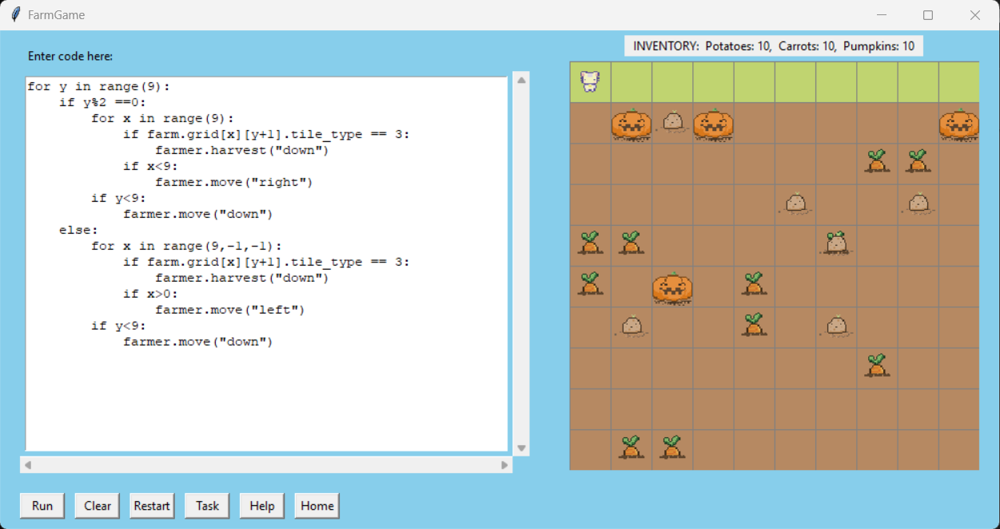

Evian McKeown
About Me
Computer Science graduate from the University of Cape Town who builds real-time and algorithmic systems: a Goertzel-based DTMF decoder with under 50 ms end-to-end latency, a RAPTOR transit router over 10× faster than a Dijkstra baseline, and a telemetry HUD plugin for the Assetto Corsa racing simulator with 140k+ downloads. Merged upstream contributor to a 2.1k-star GNOME Shell extension. A collaborative and flexible team player, currently seeking a graduate or junior software engineering role.
Education
Bachelor of Science in Computer ScienceUniversity of Cape Town — 2022 to 2025
- Data Structures & Algorithms
- Software Engineering
- Database Systems
- Operating Systems
- Parallel & Concurrent Programming
- Software Testing
- Pure Mathematics
National Senior Certificate
Jan van Riebeeck High School — 2019
Skills
Programming Languages
Frameworks & Libraries
Web & APIs
Database & Data
Systems & Infrastructure
Software Engineering Practices
AI-Assisted Development
Experience
GT7 HUD — Maintainer
Volunteer • Remote • 2026 – Present
Took over maintenance of a Gran Turismo 7-style telemetry HUD plugin for the Assetto Corsa racing simulator (original author Rhizix; 140k+ downloads) after years without updates.
- Shipped v1.3.0: battery state-of-charge ERS display, TC/ABS and throttle-blip visualisation, and an optional tyre-telemetry module.
- Exposed a shared CSP variable that lets third-party scripts report driver assistance to the HUD.
- Fixed replay spectating so telemetry follows the focused car.
- Triage user reports by reproduction status and review community patches before merging.
Projects
Public Transportation Journey Planner
Route planning system computing optimal public transit journeys from real-world GTFS schedule data. Implements RAPTOR alongside a Dijkstra variant for over 10× faster query times on large networks, with 90%+ test coverage on the core routing logic. Led a team of 3.
Github →Databank Dialer
Full-stack web app that captures DTMF tones from a Casio Databank watch via microphone, decodes them in real time using the Goertzel algorithm, and provides a click-to-dial interface for smartphones — under 50 ms end-to-end latency. Open-sourced under GPL v3 with a live public demo.
Blur My Shell
Contributor • May 2026
Fixed a dark-frame flash on blurred surfaces during wallpaper changes and corrected signal lifecycle handling in the rendering pipeline; merged upstream into a 2.1k-star GNOME Shell extension.
Top Farmer - Code Game
Game designed to teach fundamental concepts of programming languages to players.
